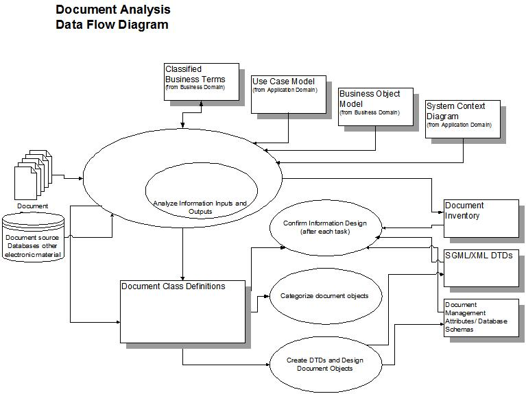

| Guideline: Document Analysis Methodology |
 |
|
| Related Elements |
|---|
DefinitionThe word document generally conjures up visions of a stack of paper, bound or stapled together, intended for reading in a serial fashion, from front to back. Traditionally a document is:
More recently a document has been:
These documents were often produced in islands of automation, not generally distributed freely electronically. Today a document is a structured presentation or view of information. It is:
Not all the information that is relevant to this new environment will be found in traditional ‘document’ formats like word processing formats or printed materials; one must also look in databases, spreadsheets and other information sources. Business Purpose of Document AnalysisThe business reasons for doing document analysis are to:
More specifically, this analysis will show how to:
The Scope of Document AnalysisThe scope of document analysis goes beyond analysis of ‘documents’ and includes evaluating other sources of information. An essential part of this analysis also includes understanding the business and technical environment in which information is used. The information and an appropriate organization for the information is the key to having what is necessary to efficiently implement the functions of the system, including workflow, authoring, processing, query and retrieval, print and electronic delivery. This analysis will affect the design of components of the system outside of the information source formats (SGML, word processing, etc.). It will effect the attributes defined in the document management system and potentially database schemas as well. The Materials NeededThe materials typically used in a document analysis are:
MethodologyThe following is an overview of the methodology used to evaluate the materials described above.
See the following diagram for a pictorial overview of the Document Analysis process.  Choosing Sample Document SetsGet a sample of all document types, including all variations if possible. If necessary, get subsets of instances but care must be taken to get as diverse a sample as is representative of the corpus of documents being analyzed. Get samples from different sources or authors since different sources often use different conventions or procedures based on their history. Get samples of different ages since the usage of tools often changes as users come and go and the organization gets more familiar with the tools in use. Where Does Information Come From?
How to Analyze Documents
Document Evaluation Questions
For each document type:
For a specific document class:
When going through this analysis, be sure to:
Also note that:
Describing StructureRemove inconsistency and redundancy that involves looking at all the defined document classes.
Keep business and technical goals in mind: system function support, reuse, interchange, storage, convertibility. Object-Oriented Design and Document AnalysisIn some ways, the process of identifying document classes and objects to be implemented in a software system can be very similar. Document classes are or contain data that is quantified into discrete, distinguishable entities. Objects that have the same internal data structure and have the same behaviors when processed are typically grouped into a class. Document classes may also share attributes and behaviors where ‘lower-level’ or subclasses have the characteristics of the ‘higher-level’ superclasses, adding a few of their own (called inheritance) or replacing them, called overloading. For document classes, like other object classes, it is possible to exploit this kind of sub-classing in the implementation system using common code to process sub-classed information objects. One point of confusion when dealing with document classes to be implemented using SGML/XML is that SGML, XML and other similar markup systems have the concept of an instance hierarchy which really represents the structure of the content of the higher level element. This is not the same inheritance in the object oriented design sense but it is possible for some SGML/XML designs to specify the inheritance of properties (often specified as attributes) down this instance hierarchy (font, point size, user level, operating system applicability) and even up that hierarchy (security classification). This may be viewed as an association in OO terms, however in SGML/XML it is a very special association because it is intrinsic to the markup system. It may be that in some cases, containment may be used to represent other types of associations that document analysis uncovers, but that is an implementation concern. Aggregation also represents this type of relationship. There are several themes from the object-oriented design arena that have an important place in document analysis. Abstraction An important part of any analysis, this is the act of focusing on the essential characteristics of a piece of information, ignoring those properties that are not a part of the object’s essence. A good test for this is comparing two object instances and determining if they are the same class, in spite of their differences. If they are, then the properties that do differ are not essential to the definition of that class. Encapsulation In document analysis, this means grouping information together at the appropriate level in the document’s structure. In SGML, this is typically done using a hierarchy of containing elements. In the programming domain, appropriate encapsulation prevents small local changes in a program from rippling across the entire program or system. In information design, appropriate encapsulation enables reuse since the information most likely to be reused as a unit is grouped together while unneeded information is not included. It also may mean that the information to be processed is available when needed, not found in another part of the document or database. Emphasis on Object Structure, Not Presentation Structure As is found in object-oriented design, there is a pronounced emphasis on object structure, what an object is, rather than how it is used, its presentation or processing. It is common to use information’s presentation or processing as one defining characteristic of a given document object’s definition but not usually the defining characteristic. Synergy Design is often a compromise but a good design finds ways to maximize the synergy of these factors while minimizing the mismatches. On the other hand, some aspects of object-oriented design are less useful in the document analysis. Combining data and behavior falls into this category. An excellent summary of how to identify and eliminate candidate objects and attributes can be found in Object-Oriented Modeling and Design by Rumbaugh, et al. in Chapter 8, Analysis. Generally, class inheritance is not part of the Document Analysis. |
| © Copyright IBM Corp. 1987, 2012 All Rights Reserved Property of IBM These materials are intended only for use as part of an IBM engagement |